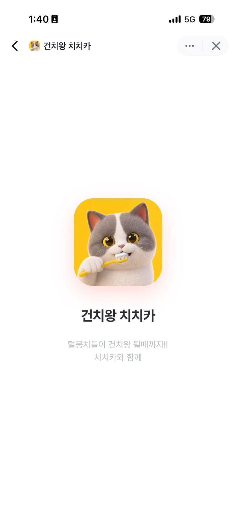
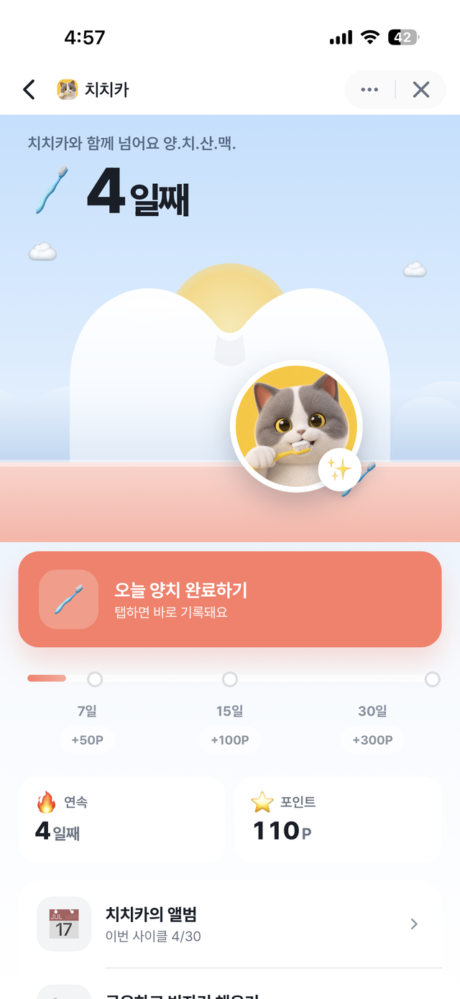
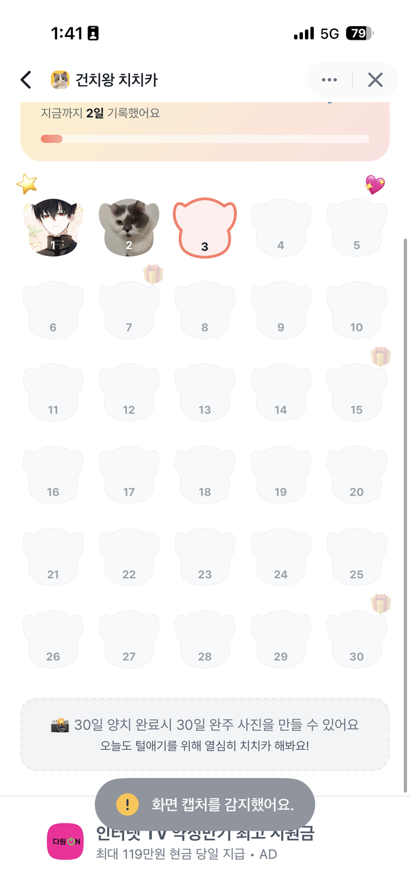
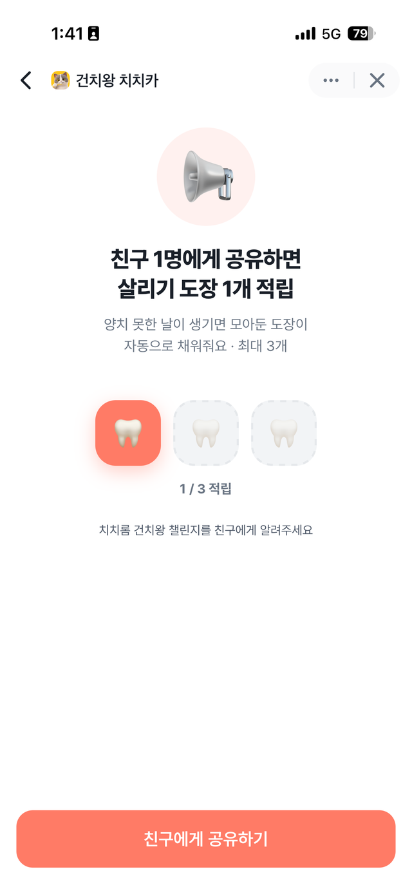

🐾 App Maker · Toss Mini App
안녕하세요! 반려동물과 사람의 하루를 조금 더 건강하게 만드는 앱을 기획하고 디자인하고 직접 만드는 1인 스튜디오입니다. 첫 번째 앱 건치왕 치치카를 소개합니다.

My Apps
하나씩, 꾸준히 늘려가는 중입니다.
반려동물 양치 습관 30일 챌린지 · 토스 미니앱
새로운 앱을 만들고 있어요. 곧 이곳에서 소개할게요!
Toss Mini App · Pet Care
반려동물 양치 습관 30일 챌린지 미니 서비스
건치왕 치치카는 반려동물의 양치 습관을 30일 챌린지로 만들어 주는 토스 인앱 미니 서비스입니다. 매일 체크인과 데일리 케어 팁 카드로 꾸준히 돌아오고 싶게 설계했고, 토스 로그인으로 가입 없이 바로 시작할 수 있습니다.
지정한 시간에 양치 리마인더를 보내 잊지 않게 해요.
오늘의 양치를 캘린더에 도장처럼 사진으로 남겨요.
7·15·30일 마일스톤마다 토스 포인트를 지급해요.
How to Use
30일이면 습관이 됩니다. 시작은 1분이면 충분해요.
토스 앱에서 “건치왕 치치카”를 검색하거나 chikachew.vercel.app에 접속하세요. 토스 로그인으로 별도 가입 없이 바로 시작됩니다.
우리 아이 이름을 등록하고, 매일 양치할 시간을 정해 리마인더 알림을 켜 주세요.
양치를 마치면 ‘오늘 양치하기’에서 사진을 찍어 체크인! 캘린더에 도장처럼 기록이 쌓여요.
7일 · 15일 · 30일 마일스톤마다 토스 포인트를 드려요. 하루를 놓쳤다면 친구에게 공유해서 챌린지를 되살릴 수 있어요.



FAQ
네, 무료로 사용할 수 있어요. 오히려 챌린지를 완주하면 토스 포인트를 받아요.
별도 설치가 필요 없어요. 토스 앱 안에서 실행되는 미니앱이라 토스에서 검색하거나 링크로 바로 접속하면 됩니다.
바로 끝나지 않아요! 친구에게 공유하면 챌린지를 되살릴 수 있는 ‘친구 찬스’가 준비되어 있어요.
챌린지 7일, 15일, 30일 마일스톤을 달성할 때마다 토스 포인트가 지급됩니다.
Contact
치치카 사용 중 불편한 점, 제휴·협업 제안, 새 앱 아이디어 — 무엇이든 편하게 남겨 주세요.